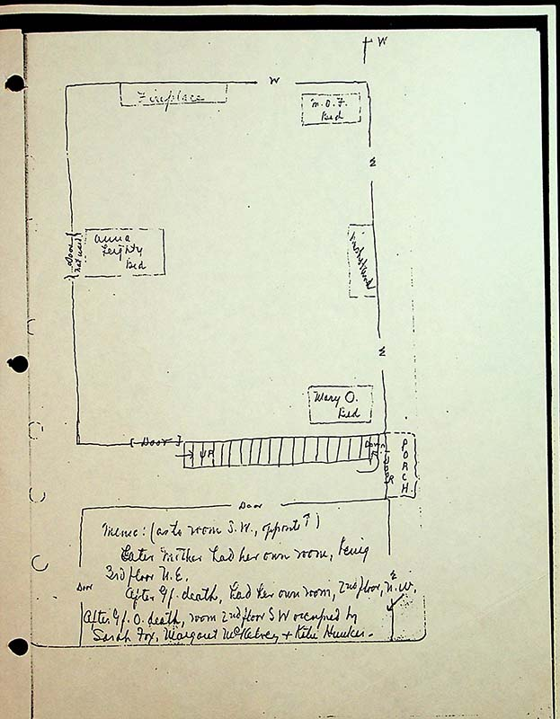

partial compass rose pointing right as West at top right
Fireplacetop/south wall
M.O.F bed top right corner
washstandright wall, center
Mary O bedbottom right of room
Anna Leighty bedcenter left of room
stairsbottom of drawing outside of room, up to right
Memo: (as to Mom, SW opposite)
Later Mother had her own room, being 3rd floor N.E.
After Gf death, had her own room, 2nd floor, N.W
After GfO death room 2nd floor SW occupied by Sarah Fox, Margaret McKelvey, and Katie Hunker.